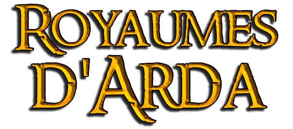

Archives d'Imladris
Introduction
Installation du submod
Équipe des Royaumes d'Arda
Les Royaumes d'Arda
Gondor
Rohan
Nains
Lothlórien
Eriador
Eryn Lasgalen
Mordor
Isengard
Monts Brumeux
Dol Guldur
Fiefs du Gondor
La Guerre de l'Anneau
Carte interactive
Règles de la GDA
Factions
Joueurs
Chronologie
Grands tournois de Valinor
Règles des tournois
Participants
Résultats